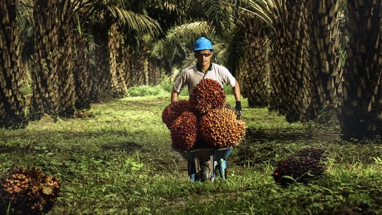
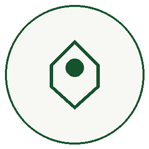
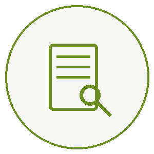
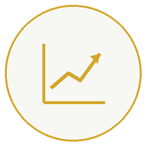
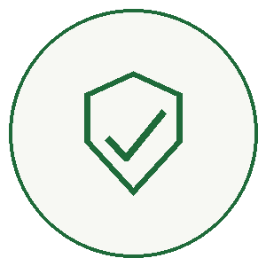

Membangun Masa Depan untuk Negri Tercinta
Kami adalah mitra strategis terpercaya dalam menyediakan data komprehensif, direktori lahan, dan layanan survei perkebunan kelapa sawit berkualitas tinggi di seluruh Indonesia.
Perkebunan Sawit
Pengunjung Website
Tahun Pengalaman
Tim Profesional

Perkebunan Sawit untuk Kemajuan Ekonomi Negara
PT.SawitGo adalah perusahaan yang berdiri sejak 2000. Kami berfokus membantu perusahaan yang mencari perkebunan sawit yang berkualitas dan terpercaya.
Kami percaya setiap bisnis punya cerita unik dan tugas kami adalah memberikan informasi mengenai perkebunan sawit berkualitas dan siap panen.
Solusi Lengkap Seputar Perkebunan Sawit
Dari pencarian lahan hingga legalitas, kami mendampingi setiap tahapannya

Direktori Lahan Sawit
Data dan katalog wilayah perkebunan sawit yang siap dijual atau dikelola.

Survei & Analisis Kebun
Tim lapangan kami mensurvei kualitas tanah, usia tanam, dan estimasi panen.

Konsultasi Investasi
Bantuan menentukan lahan sawit yang paling menguntungkan untukinvestasi anda.

Legalitas & Perizinan
Pendampingan proses perizinan dan legaliats lahan seperti HGU dan sertifikasi.
Dipercaya Perusahaan di Seluruh Indonesia
Data Akurat & Terkini
Setiap lahan yang kami rekomendasikan sudah melalui verifikasi dan Survei dilapangan.
Tim Berpengalaman
Lebih dari 20 tahun bekerja sama dengan petani dan perusahaan perkebunan sawit di berbagai daerah.
Proses Transparan
Laporan survei dan legalitas kami sampaikan secara jelas tanpa biaya tersembunyi.
Menemukan Perkebunan Sawit Tepat
Konsultasikan kebutuhan anda secara gratis bersama PT.SawitGo.
Hubungi Kami Sekarang